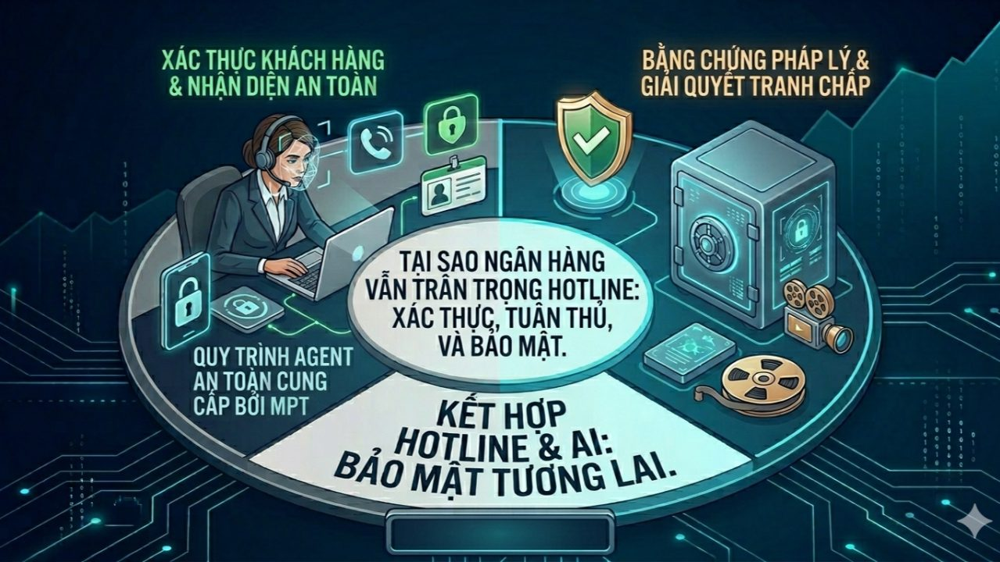
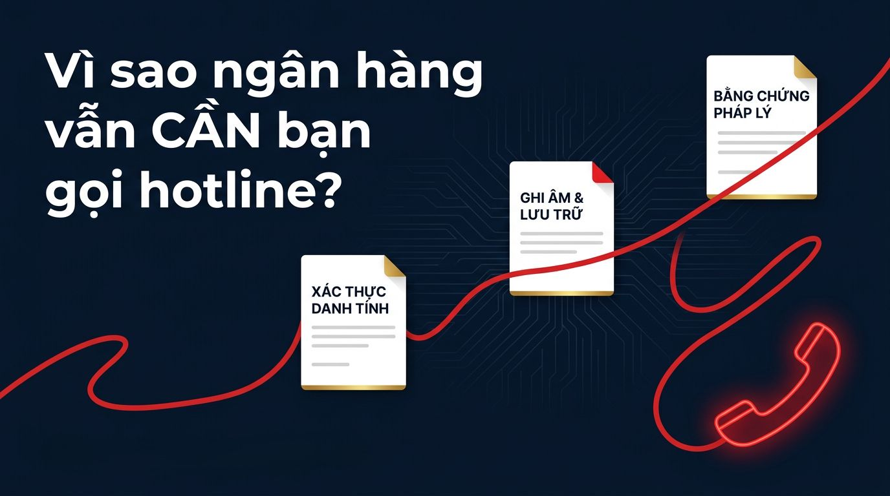

Trang chủ › Blog › Contact Center Insights · Mùa 1
Chất lượng và chi phí
Vì sao nhiều ngân hàng vẫn muốn khách hàng gọi hotline?

Trong các kỳ trước, chúng ta đã nói nhiều về việc giảm tải cho Contact Center thông qua Automation (#Kỳ 9) và Voicebot (#Kỳ 10). Vậy phải chăng Hotline đang dần "lỗi thời"?

Ngược lại. Trong ngành Ngân hàng, Hotline không chỉ là một kênh liên lạc, nó là "Pháo đài bảo mật" và "Điểm tựa niềm tin" cuối cùng của khách hàng.
1. Khi con người là bộ lọc bảo mật tốt nhất
Dù App ngân hàng có hiện đại đến đâu, có những tình huống "ngặt nghèo" mà AI hay Chatbot chưa thể thay thế hoàn toàn vai trò của một Agent chuyên nghiệp:
Xác thực định danh cấp độ cao (KYC): Với các vụ việc báo mất thẻ khẩn cấp hoặc nghi ngờ gian lận, Agent có khả năng truy vấn lịch sử giao dịch và đặt những câu hỏi bảo mật "biến hóa" để xác minh danh tính khách hàng chính xác hơn bất kỳ thuật toán nào.
Xử lý tình huống khẩn cấp (Urgency): Khi tài khoản bị trừ tiền vô lý, cái khách hàng cần không chỉ là câu trả lời đúng, mà là một giọng nói thấu cảm cam kết rằng: "Em đã tiếp nhận và khóa tài khoản cho anh/chị ngay lập tức".
2. Hotline – "Bằng chứng thép" về mặt pháp lý
Trong ngành tài chính, "nói có sách, mách có chứng". Hotline đóng vai trò cực kỳ quan trọng trong việc giảm thiểu rủi ro pháp lý cho cả hai phía:
Ghi âm và Lưu trữ: 100% cuộc gọi được lưu lại là tài sản vô giá khi xảy ra tranh chấp. Đây là bằng chứng pháp lý mạnh mẽ nhất để đối chiếu thông tin.
Tính tuân thủ (Compliance): Các quy định khắt khe của Ngân hàng Nhà nước luôn yêu cầu các quy trình trọng yếu phải được thực hiện qua kênh có giám sát và ghi âm để đảm bảo tính minh bạch.
3. Điểm chạm tạo nên lòng trung thành (Human Touch)
Một khách hàng có thể dùng App cả năm mà không nhớ tên ngân hàng, nhưng họ sẽ nhớ mãi người Agent đã bình tĩnh hỗ trợ họ lấy lại tiền trong một vụ lừa đảo qua mạng. Hotline chính là nơi chuyển hóa Rủi ro thành Cơ hội (Moment of Truth) để giữ chân khách hàng trung thành.
Lời kết:
Hotline sẽ không biến mất, nhưng nó sẽ "thay hình đổi dạng". Thay vì xử lý những việc lặt vặt như tra cứu số dư, Hotline sẽ trở thành kênh chuyên biệt cho Bảo mật, Khiếu nại và Tư vấn sâu.
Để làm được điều này, doanh nghiệp cần một hệ thống quản trị chất lượng "thép" như OmiQC (#Kỳ 8) để soi xét từng giây ghi âm, đảm bảo tính tuân thủ tuyệt đối trong những cuộc gọi nhạy cảm này.
👉 Góc thảo luận: Theo các anh chị, trong tương lai, Hotline ngân hàng sẽ dần bị thay thế bởi Video Call để xác thực khuôn mặt, hay giọng nói qua điện thoại vẫn là "tiêu chuẩn vàng" về bảo mật?